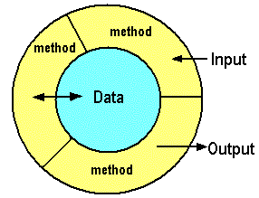

Designing Object-Oriented Software with
SOLID
Principles

The Ugly
Multiple solutions to the same problem
Pragmatism
Dogmatism
Object-Oriented Goals
Cohesion
High
Responsibilities are few and intimately related
Methods act on same state or are somehow connected
Promotes encapsulation (beware of ease of testing)
Low
Responsibilities are many and/or not so related to each other
Some methods work with different state
Indicates complexity. Candidates to be split
Coupling
Measure of how a component (class/package) depends on other components
not avoided ad-infinitum; managed, instead
Low loose, weak
Interaction between a limited number of components
Changes in loosely coupled components do not propagate
Fosters reuse. Watch unnecessary complexity
High tight, strong
Interactions are spread all over the place
Changes in "remote" places propagate themselves
Elements are difficult to understand in isolation
Encapsulation
Hiding details that are likely to change
Separation is King
abstraction / implementation
data / behaviour

Law of Demeter
- container object
- a parameter
- a member variable/property
- objects created within
Within a method
- encapsulation broken
- coupling increased
- cohesion lowered